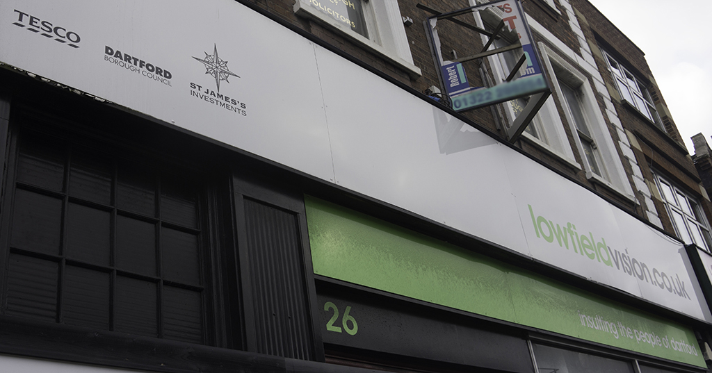

404 Error - No Vision for Dartford Found
No Plan B found either

This is a parody site which is not supported by Tesco, Dartford Borough Council or any associated organisations. Same for this web site...